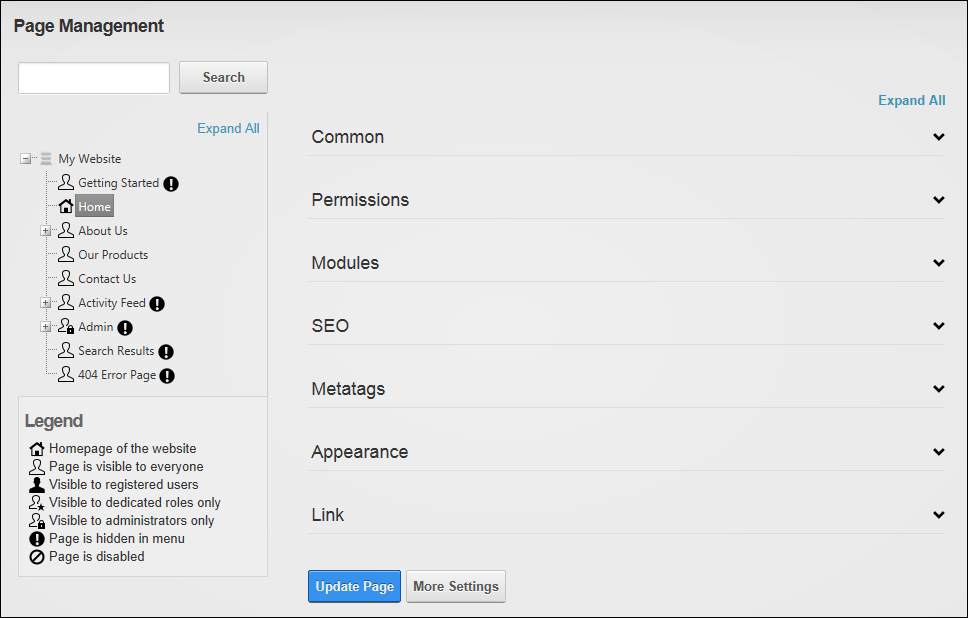
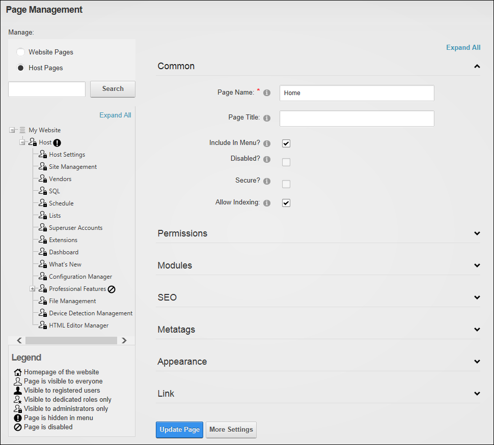

The Admin > Page Management page displays a complete list of all pages on the site including hidden pages, disabled pages and the Admin pages, and allows authorized users to create and manage pages. The Pages module offers additional page management tools than the Pages section of the Control Panel, including the ability to modify page hierarchy and add multiple pages on multiple levels in a single update. Page Management and can be added to site pages.
Only Page Editors and Administrators can access pages where the Pages module is located. Users must be granted Edit Page permission in DNN Platform, or Add Content permissions in Evoq Content and Evoq Content Enterprise, to the page where the Pages module is located to access the module. This permission enables these users to manage any pages that they are Page Editors for.
Important. If you have a large number of site pages the Pages module may be slow to respond. You can however enhance the speed and performance of the Pages module significantly by setting the Page State Persistence to Memory.

The Pages Module as viewed by Admin
SuperUsers have access to the "Manage" field that is located above the list of pages. This field allows them to choose between managing the site and Admin pages or the Host pages for the current site.

The Pages Module as viewed by SuperUsers